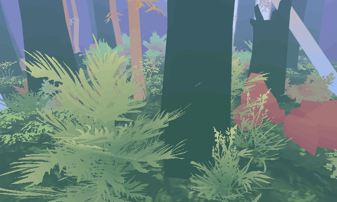
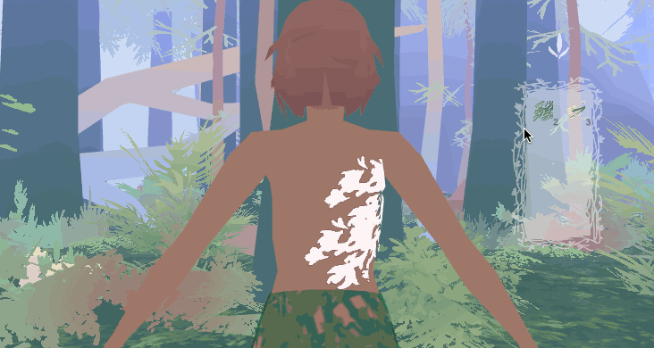
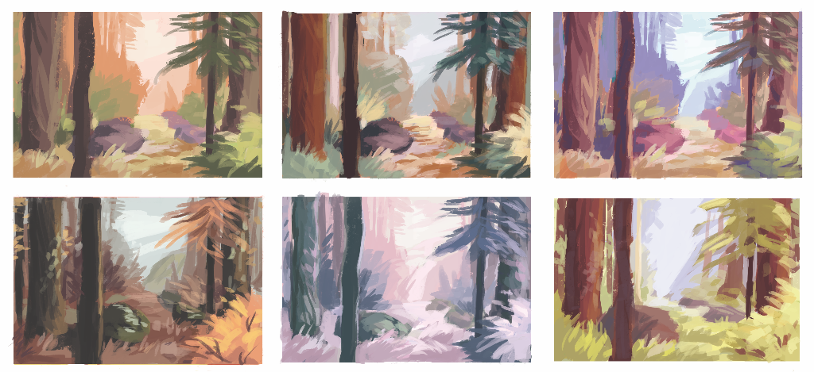

a peaceful game about costume and nature
On their journey down rivers and over mountain fissures, players will encounter a variety of opportunities to experiment and express ideas. The landscape is inhabited by a variety of strange animals. Mimicking their appearance will allow players to borrow some of their abilities or interact with them in new ways. To do so, players can fashion their own costumes using things collected in an abundant forest.
This is the sort of game I always looked for as a player. I know that I'm not alone; there is an under-served group of players who look to games to make things and explore their own ideas. Additionally, it is an interesting challenge to make digital worlds and systems that support creative play. And unexpectedly, this project gave me a better appreciation for the complex beauty of forests and the importance of presenting a more positive relationship with animals.
I've been developing this project in Unity. Working solo has presented a myriad of decisions. I make decisions by asking whether they will support creative play and, as a secondary goal, create an intriguing sense of place. The answer to this question is often subjective and complicated. I'm consulting playtesting as well as research on similar games and the design of creative software to inform the game.
For more info: I’ve been posting development updates on Twitter . Feel free to message me there too.